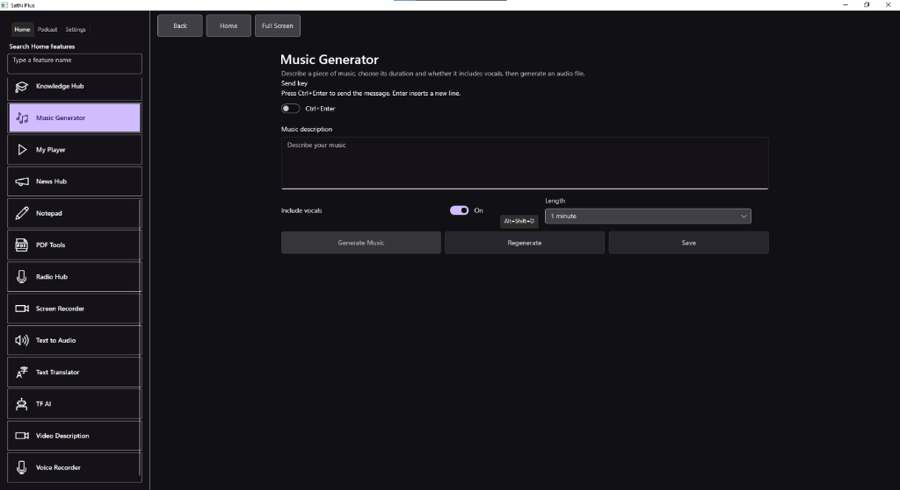

Sathi Plus — UI Screenshot
Compose original music, generate stunning images, manage PDFs with a 12-in-1 offline suite, read documents in focused bliss, and transcribe audio — all in one native desktop app.

Say goodbye to juggling twenty disconnected web apps. Sathi Plus brings together generative artificial intelligence, document mastery, and multimedia utilities directly onto your machine.
Create media on demand without complex cloud configurations. Transform simple text prompts into production-grade assets.
A complete 12-tool Swiss Army Knife for PDFs, paired with a library manager for distraction-free reading and research.
Built-in recording, transcription, and translation workflows that keep your content pipelines smooth and private.
Everything you saw in the sidebar is included out of the box. No subscription lock-in, no hidden micropayments.
Most free online PDF utilities upload your private contracts, financial sheets, and legal documents to third-party servers. Sathi Plus executes every single operation 100% locally on your CPU/GPU.
Clean installers with verified signatures. Choose your platform below to get started in seconds.
macOS 11.0 Big Sur or later (Sequoia ready)
brew install --cask sathi-plus
Windows 10 / Windows 11 (64-bit systems)
winget install SathiPlus.SathiPlus
| Requirement | macOS | Windows |
|---|---|---|
| Operating System | macOS 11.0 (Big Sur), Monterey, Ventura, Sonoma, Sequoia | Windows 10 / Windows 11 (64-bit architecture) |
| Processor | Apple Silicon M1/M2/M3/M4 or Intel Core i5/i7/i9 | Intel Core i3 / AMD Ryzen 3 or higher (x64) |
| Memory (RAM) | 4 GB minimum (8 GB recommended for AI models) | 4 GB minimum (8 GB recommended for AI models) |
| Storage Space | 500 MB free space for app installation | 500 MB free space for app installation |
| Graphics | Apple Metal capable GPU (integrated or discrete) | DirectX 11 / OpenGL 3.3 compatible GPU |
Everything you need to know about Sathi Plus, privacy, features, and system compatibility.
Ctrl + Enter to send generation prompts, Alt + Shift + D for quick actions (such as importing documents or toggling vocal tracks), and use the top search bar to jump to any module instantly.
brew upgrade sathi-plus) or Windows Package Manager (winget upgrade SathiPlus).